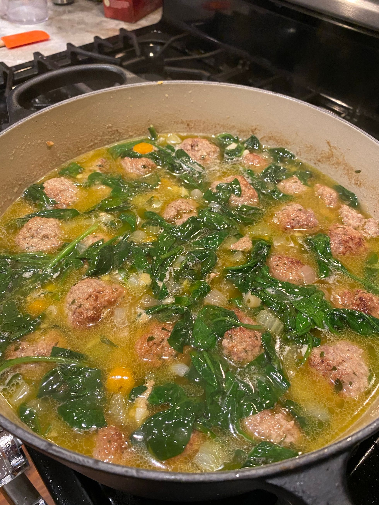

Italian Wedding Soup

Description
This is a pasta based soup with meatballs and lots of parigiano regiano
Shoutout to my lovely sister Katie Stilo who developed this recipe,
click here to find it.
Ingredients
- 2 tbs Olive Oil
- 2 Carrots, Peeled and Roughly Chopped
- 3 Stalks Celery, Roughly Chopped
- 1 Medium Onion, Roughly Chopped
- 2 Bay Leaves
- Salt and Freshly Ground Black Pepper, to Taste
- 3 Cloves Garlic, Roughly Chopped
- 1 Pinch Ground Nutmeg
- 2 Quarts Chicken Stock
- 1.5 Cups Water
- 1 Parmesan Rind
- 1 Cup Small Noodles, Such as Ditalini
- 1 5 Ounce Container of Baby Spinach
- Grated Parmesan, for Serving
Directions
- Heat 2 tablespoons olive oil in a large Dutch oven over medium heat. Add carrots, celery, onions and bay leaf to the pot. Cook until softened but not browned, 6 to 8 minutes. Season with salt and pepper.
- Add garlic and a pinch of nutmeg to the softened vegetables. Cook until garlic is fragrant, about 1-2 minutes.
- Add in chicken stock, water and Parmesan rind. Bring to a boil then reduce to simmer.
- Using about one ladleful of the simmering broth, add to warm skillet where the meatballs have been previously cooked. Use the hot broth to scrape up the browned bits in the skillet. Add this liquid from the skillet to the pot of simmering soup.
- Add seared meatballs into the pot. Simmer soup till flavors have had a chance to meld and vegetables are tender, about 20 minutes.
- Add in pasta and baby spinach. Cook additional 10 minutes, until noodles are tender and spinach is wilted. Taste for seasoning, add additional salt and pepper to taste. Remove bay leaves and Parmesan rind. Serve with extra grated cheese and a squeeze of lemon, if desired.